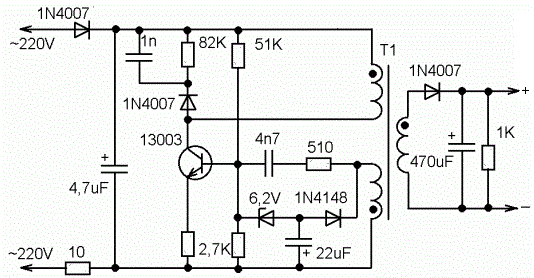
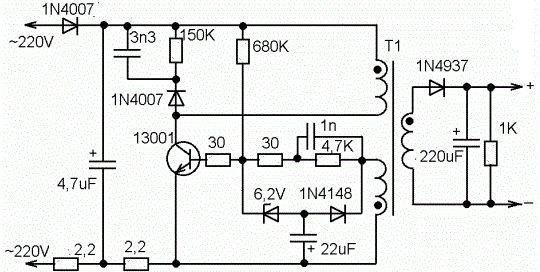
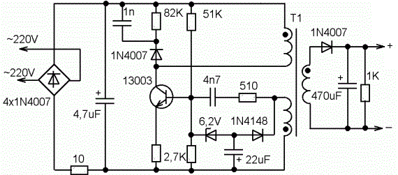
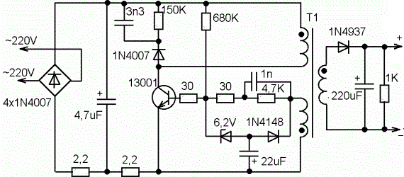
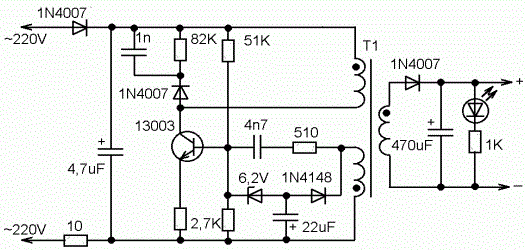
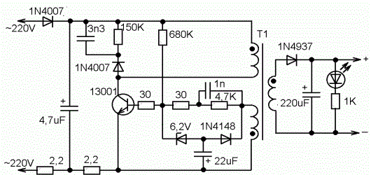
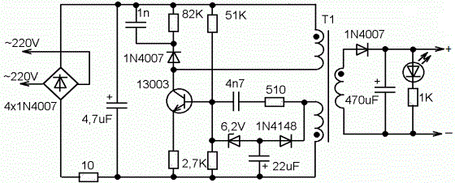
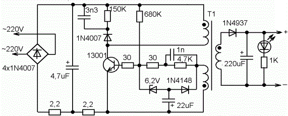

Зарядные устройства сотового телефона
Зарядные устройства различных фирм-производителей построены по схожим схемам (рис. 1-8). Практически это схема высоковольтного блоккинг-генератора, напряжение со вторичной обмотки трансформатора которого выпрямляется и служит для зарядки аккумулятора сотового телефона. Различие заключается только в разъемах, а так же в схеме, такие как выполненение входного сетевого выпрямителя по однополупериодной или мостовой схеме, в схеме установки рабочей точки на базе транзистора, наличие или отсутствие индикаторного светодиода, и другие мелочи.







